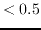

Next: ATCA Spectral Line Correlator Up: Spectral Line Data Reduction Previous: Spectral Line Data Reduction
In defining a velocity, a rest frame must also be given. Because of the Earth's diurnal and annual motion (spin on its axis, and rotation around the Sun), the Earth's surface is not a good rest frame. The diurnal and annual motion have maximum velocity components of approximately 0.5 km/s and 30 km/s respectively. Two commonly used rest frames are the solar system barycentre (the dynamical centre of the solar system) and the local standard of rest (LSR) (which accounts for motion of the solar system relative to a collection of local stars). The local standard of rest is generally used as the rest frame for Galactic astronomy, whereas the barycentric frame (often misnamed heliocentric frame - which is slightly different) is generally used for extragalactic work. Miriad uses the ``definition'' of the LSR that the solar system barycentre is moving at 20 km/s in the direction of (RA,DEC) = 18 hours,+30 degrees (B1900) (this is a so-called ``kinematic'' definition of the LSR).
Because of the Earth's motion, the frequency that corresponds to a particular velocity of an astronomical source will change with time. When observing spectral lines, many observatories continuously change the observing frequency to account for the effect of the Earth motion, and thus make a particular source velocity correspond to a single channel. This is known as Doppler tracking.
Note, however, that the ATCA does not Doppler track.
This means that the channel that a particular source line corresponds to varies with time. If the velocity resolution is coarse compared to the diurnal velocity component of the Earth (  km/s), and only a single configuration of data is being used, this effect can be ignored. However when high velocity resolution is required or multiple configurations are being combined, account must be made of the way the line wanders between channels. That is, account must be taken of the changing radial velocity of the observatory.
For a dataset from an observatory that does Doppler track (i.e. not the ATCA), the frequency descriptors in a dataset should vary with time. This will be the case with some datasets, but not others - the time varying Doppler frequency component has been lost somewhere. Although this loss will affect the calculation of u-v coordinates, the error that it introduces is generally negligible (see the discussion in the spectral-line processing chapter of Neil Killeen's ``Analysis of Australia Telescope Compact Array Data'').
Regardless of whether or not the observatory Doppler tracks, Miriad stores
the radial velocity of the observatory (with respect to the rest frame)
to account for the Earth's motion when determining source velocities.
This is stored in the visibility
variable veldop.